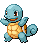

-
bulbasaur #001

- Grama
- Veneno
Bulbasaur, ele carrega a semente de uma planta em suas costas desde o nascimento. A semente se desenvolve lentamente.
-
ivysaur #002

- Grama
- Veneno
A luz solar fará a flor em suas costas crescer. Conforme Ivysaur for crescendo, essa flor irá desabrochar. Ela irá soltar um doce aroma quando florescer.
-
venusaur #003

- Grama
- Veneno
Acredita-se que uma dieta nutritiva e muita luz solar fazem a flor de Venusaur florescer em cores mais vibrantes. O perfume da flor pode acalmar e curar o coração humano.
-
charmander #004

- Fogo
Quando a ponta da cauda de Charmander queima brilhantemente, isso indica que ele está de boa saúde.
-
charmeleon #005

- Fogo
Charmeleon derruba oponentes com sua cauda, então os derrota usando garras afiadas.
-
charizard #006

- Fogo
- Voador
Ao competir em batalhas intensas, a chama de Charizard também se torna mais intensa.
-
squirtle #007
- Água
Squirtle se esconde em sua concha que borrifa água em seu oponente sempre que pode.
-
wartortle #008

- Água
Um Pokémon muito procurado porque dizem que sua longa cauda coberta de pelos traz boa sorte.
-
blastoise #009

- Água
Blastoise é a forma final evoluída de Squirtle. Ele pode lançar poderosas rajadas de água de seus bicos de água.
-
caterpie #010

- Inseto
Caterpie libera um odor desagradável de sua antena vermelha. Ele muda várias vezes durante o crescimento.